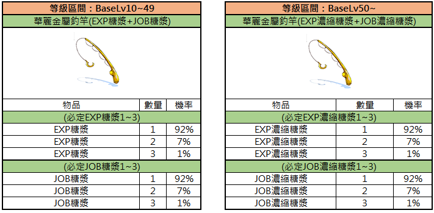

Angel-System (釣魚系統)
Leveln durch Angeln? Auf TWRoZ ja — dank „Erfahrungs-Sirup" und seltenem „Goldfisch" ist Fishing eine legitime AFK-XP-Methode und Titel-Jagd.
🎣 Einstieg: Die kaputte Angelrute (破舊的釣竿)
NPC: Angel-Meister Alter Jia (釣魚宗師-老賈)
Position: /navi prt_fild08 338/303
- Sprich mit dem Angel-Meister — er gibt dir die Angelrute-Bastel-Quest
- Nach Abschluss der Quest erhältst du täglich 10× Standard-Köder (普通魚餌)
Anzahl kann durch Angel-Titel erhöht werden - Sammle bestimmte Mengen an „Meereszeichen" (海的信物) → schalte entsprechende Titel frei
- Bringe 4× „Goldfisch" (金魚) → erhalte den seltenen Titel „Herr des Meeres" (大海的主人)

Das Bild zeigt den NPC Angelmeister Old Jiao in prt_fild08 und listet seine verfügbaren Angel-Quests auf.
| Aufgabenname | Bedingungen | Aufgabenziel | Belohnung |
|---|---|---|---|
| Make Fishing Rod | None | Tree Root 10, Manananggal Branch 20 | Old Fishing Rod |
| Fishing Mastery - Bronze | Complete Quest 'Make Fishing Rod' | Sea Creature 70 | Title - [Fishing Bronze] |
| Fishing Mastery - Silver | Complete Quest 'Fishing Mastery - Bronze' | Sea Creature 150 | Title - [Fishing Silver] |
| Fishing Mastery - Gold | Complete Quest 'Fishing Mastery - Gold' | Sea Creature 300 | Title - [Fishing Gold] |
Der NPC heißt 'Fishing Master Old Jiao' (prt_fild08 338 303). Die Liste zeigt die Anforderungen für Angel-Quests und die entsprechenden Titel-Belohnungen.
📍 Angel-Gewässer
Die Prontera-Abenteurer-Gilde erkundet kontinuierlich neue Gewässer. Mit jedem Patch werden weitere Spots freigeschaltet.
🎁 Reward-Übersicht (Standard-Rute)

Diese Tabelle zeigt die zufälligen und garantierten Belohnungen für 'Ordinary Fish Bait' basierend auf dem Charakter-Levelbereich 10-49.
| Gegenstand | Menge | Chance |
|---|---|---|
| ? | 1 | ? |
| ? | 1 | ? |
| ? | 1 | ? |
| ? | 1 | ? |
| EXP Potion | 1 | ? |
| EXP Potion | 2 | ? |
| Battle Manual (Event) | 1 | ? |
| 'Golden' Fish | 1 | ? |
| Sea Token | 1 | 100% |
Die Kategorie 'Ordinary Fish Bait' ist unterteilt in zufällige Ergebnisse und einen garantierten Gegenstand (Sea Token).
✨ Stufe 2: Prächtige Metall-Angelrute (華麗金屬釣竿)
Ein deutliches Upgrade mit besseren Rewards — vor allem die XP-Sirup-Belohnung macht diese Rute zum Leveling-Tool.

Tabelle mit Preisen und Nutzungsdauer für die 'Fancy Metal Fishing Rod' im Spiel.
| Gegenstand | Dauer | Preis | Funktion |
|---|---|---|---|
| Fancy Metal Fishing Rod | 12 Stunden | 120 Cash | Kann an Angelplätzen ausgewählt werden, um die 'Fancy Metal Fishing Rod' zu benutzen. |
| Fancy Metal Fishing Rod | 6 Stunden | 60 Cash | ※ Kein Köder erforderlich, unbegrenzte Nutzung innerhalb der Zeitdauer. |
| Fancy Metal Fishing Rod | 1 Stunde | 10 Cash |
Die Tabelle listet verschiedene Laufzeiten für die 'Fancy Metal Fishing Rod' und deren Kosten auf. Es ist kein zusätzlicher Köder nötig und die Nutzung ist während der Laufzeit unbegrenzt.

Dies ist eine Tabelle mit Informationen zu einem Verbrauchsgegenstand namens EXP Konzentrat in Ragnarok Zero.
| Gegenstand | Gegenstandsbeschreibung |
|---|---|
| EXP Konzentrat | [Dieser Gegenstand kann nicht mit anderen Konten gehandelt werden.] Gewährt nach dem Trinken 40.000 Base EXP. Maximale Steigerung des BaseLv bei einmaliger Verwendung: 1. Kann in einigen Anfängerbereichen nicht verwendet werden. Dieser Gegenstand kann nicht innerhalb von Gebäuden verwendet werden. Erforderliches Level: 50 Maximales Level: 99 Gewicht: 0 |
🍯 XP-Sirup & Job-Sirup (Patch 10.02.2026)

Vergleich der Belohnungen beim Angeln mit der Luxuriösen Angelrute basierend auf dem Base-Level-Bereich.
| Gegenstand | Menge | Wahrscheinlichkeit |
|---|---|---|
| (EXP Syrup 1~3 garantiert) | ||
| EXP Syrup | 1 | 92% |
| EXP Syrup | 2 | 7% |
| EXP Syrup | 3 | 1% |
| (JOB Syrup 1~3 garantiert) | ||
| JOB Syrup | 1 | 92% |
| JOB Syrup | 2 | 7% |
| JOB Syrup | 3 | 1% |
| (Concentrated EXP Syrup 1~3 garantiert) | ||
| Concentrated EXP Syrup | 1 | 92% |
| Concentrated EXP Syrup | 2 | 7% |
| Concentrated EXP Syrup | 3 | 1% |
| (Concentrated JOB Syrup 1~3 garantiert) | ||
| Concentrated JOB Syrup | 1 | 92% |
| Concentrated JOB Syrup | 2 | 7% |
| Concentrated JOB Syrup | 3 | 1% |
Die Tabelle zeigt zwei Kategorien: Luxuriöse Angelrute für BaseLv 10-49 (EXP/JOB Syrup) und für BaseLv 50+ (Concentrated EXP/JOB Syrup).
💡 Strategie-Tipps
- Daily-Run: Hol deine 10 Standard-Köder jeden Tag — das ist kostenlos und garantiert
- Titel-Jagd: Meereszeichen sammeln → Angel-Titel freischalten → mehr tägliche Köder
- Metall-Rute lohnt: Der Upgrade-Aufwand zahlt sich durch XP/Job-Sirupe aus, besonders für Trans-Level-Grind
- Der Goldfisch: Selten, aber 4 davon = „Herr des Meeres" (Prestige-Titel)
- Kombinier mit Fever-Boost: Siehe Fever Maps für aktive XP-Sessions zwischen Angel-Trips